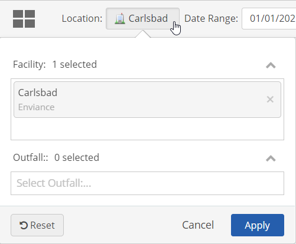
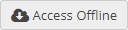

While connected, open the Portal page that shows the data.
If a Location (objects) selector is available for the page, click in the box and select the objects whose data you want to include. You can enter a few characters of the name to search and filter locations by name, then select the one you want.

Download the data by clicking the Access Offline button.

Choose the option to Download Now.
This button will not be enabled unless you have selected objects in Step 1 first.
The Offline button will show that the download is in process.

When the download is complete, you can disconnect. When disconnected, the Currently Offline button will be shown.

You can use this button to reconnect when a connection is available, if necessary.
Once you are reconnected, upload the data to the system by clicking the Upload Available button.

Click Upload Now to upload the data immediately.

Alternatively, you can review the data to be uploaded first by clicking Review Offline Data.

After reviewing, click Upload.